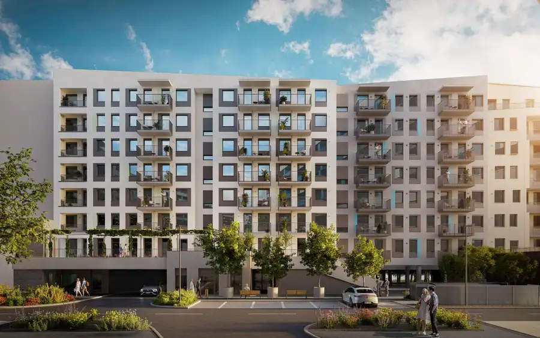
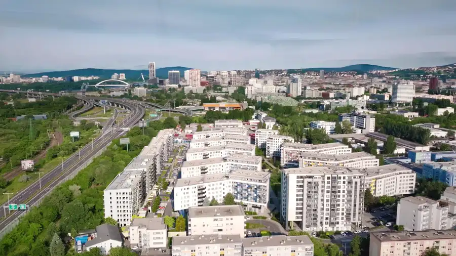
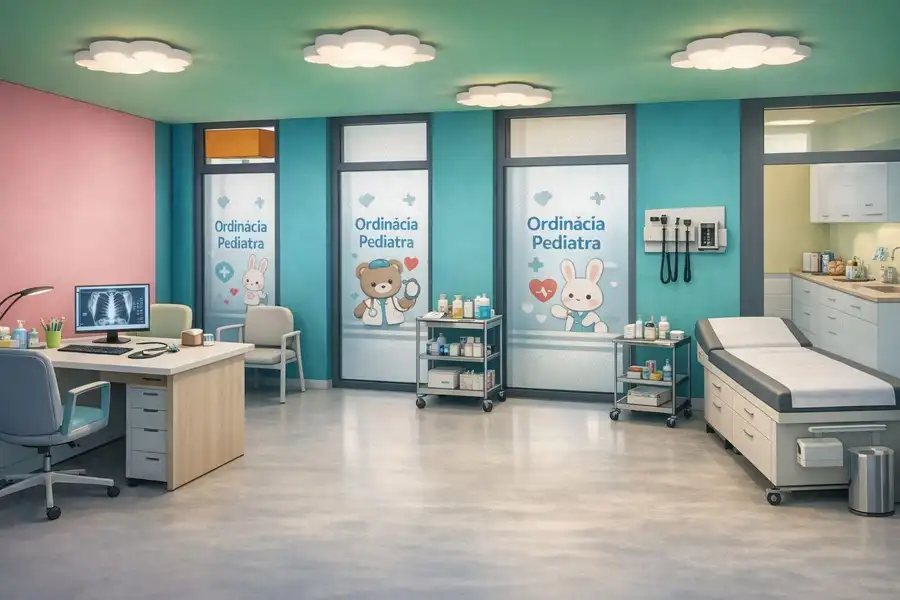
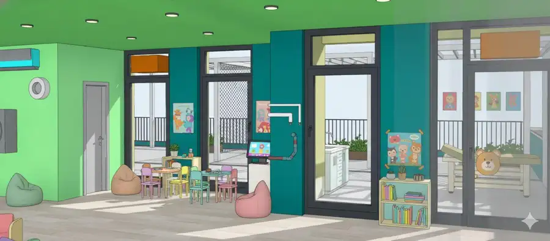
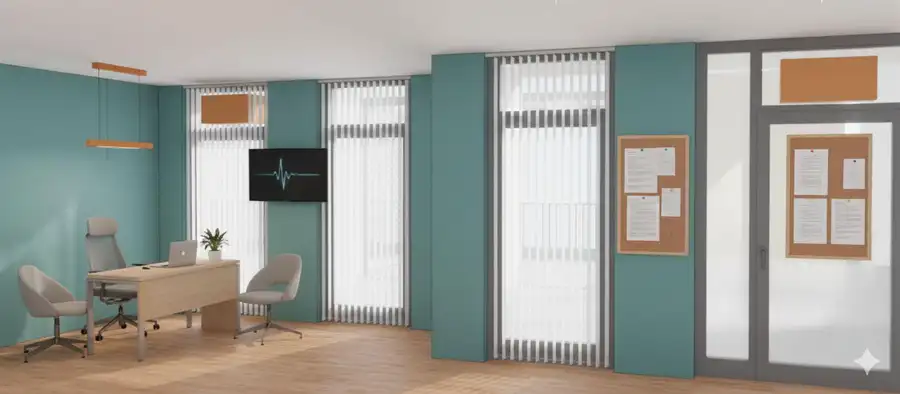
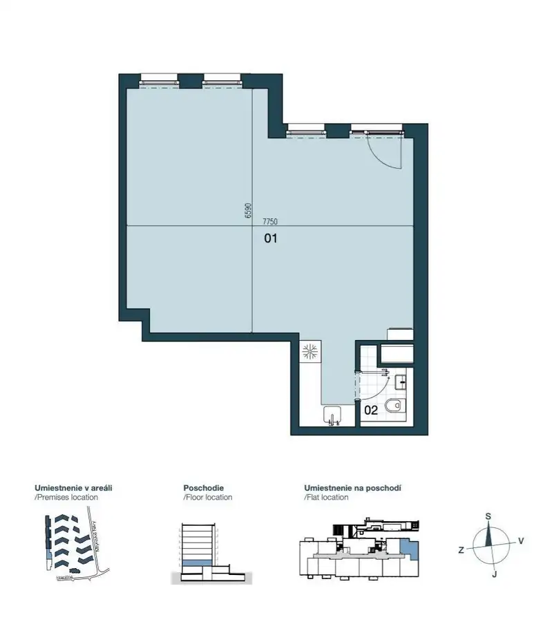
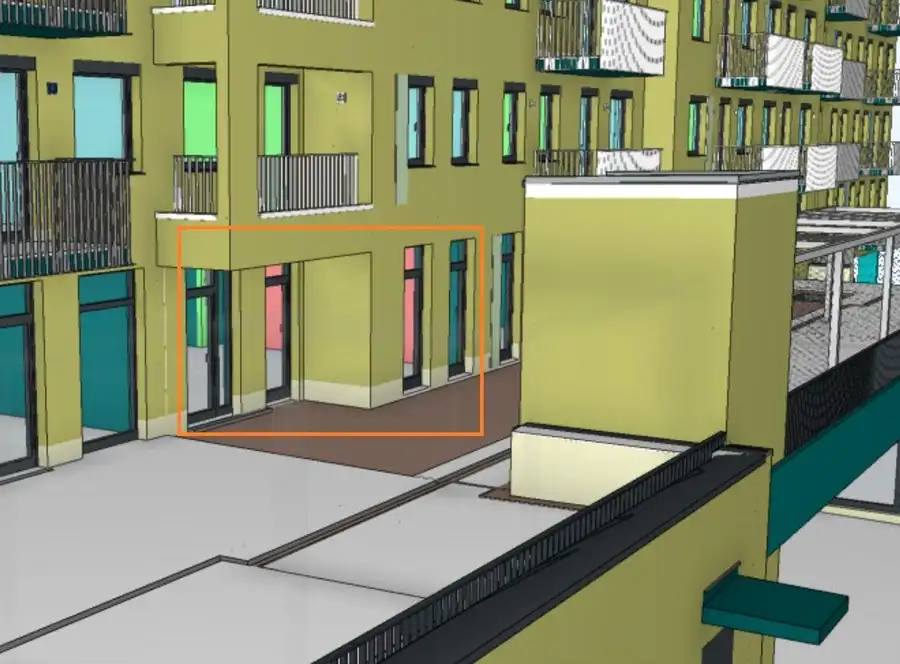
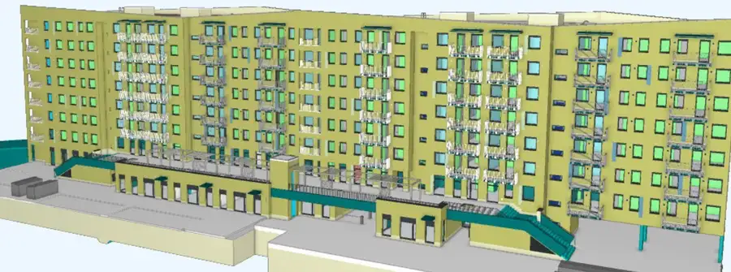

NUPPU - Nový 52 m2 nebytový priestor s Parkovaním. Príležitosť.
Ružinov, Bratislava








- Plocha52 m²
- StavNovostavba
- VlastníctvoFiremné
O nehnuteľnosti
REBECCA REAL ESTATE Vám ponúka na prenájom úplne nový nebytový priestor s vnútorným parkovacím státím v Novostavbe NUPPU MAGNÓLIA 4 na ulici Hraničná v Ružinove.Termín dokončenia a kolaudácie je k November 2026.Nebytový priestor o výmere 52,18m2 je situovaný na 1.poschodí v atraktívnej novovybudovanej lokalite Ružinova. Súčasťou priestoru je aj hygienické zariadenie (umývadlo, WC) a klíma. K nebytovému priestoru prislúcha aj jedno parkovacie miesto v podzemnej garáži. Vstup do nebytového priestoru je cez vonkajšie schodisko na terasu, ktorá sa tiahne celým 1.poschodím alebo externým výťahom. Verejné parkovanie pred bytovým domom. V prípade potreby je možné si ešte aj prenajať ďalšie vnútorné alebo vonkajšie parkovacie státie. V modernom bytovom komplexe NUPPU sa nachádza už približne 1500 bytových jednotiek z ktorých prevažne polovičku tvoria rodiny s deťmi a preto tento priestor poskytuje široké možnosti a je ideálne vhodný napríklad ako decká ambulancia, lekár, zubár, škôlka pre deti, estetická medicína, kancelária, a iné rôzne podnikateľské zámery či služby. Výborná príležitosť pre Vaše podnikanie v krásnom novom priestore. PROJEKT NUPPU disponuje vlastným upraveným rozsiahlym vnútorným dvorom, ktorý zahŕňa rozsiahly park so zeleňou, oddychové, spoločenské, fitness a športové zóny- multifunkčné ihrisko a stolnotenisové stoly, vonkajší krb, oplotený výbeh pre psov. Príjemné prostredie s príslušenstvom a upraveným okolím projektu zaručuje kvalitné bývanie a podnikanie pre moderných ľudí v obľúbenej mestskej časti Ružinov, Projekt NUPPU vytvára svojím originálnym architektonickým riešením a úpravou okolia priestor plný energie a nápadov v novom centre Prievozu predpoklady na aktívny a kvalitný život či podnikateľské zámery. LOKALITA:Výborná poloha a občianska vybavenosť: v pešej dostupnosti MHD, obchody, reštaurácie, autom 10 min. do centra mesta, veľmi dobré napojenie na dopravné uzly. Cena prenájmu aj s vnútorným parkovacím státím je 1098,- Eur + DPH / mesačne + elektrika a internet.Pri podpise nájomnej zmluvy sa platí mesačný nájom vopred + dvoj - troj mesačný depozit (záleží na dohode oboch zmluvných strán a na účele nájmu) a jednomesačný poplatok RK. Prosím neváhajte ma kontaktovať ohľadne bližších informácií osobne, whats, telefonát, email. KONTAKTRebecca Real EstateIng. Zuzana Jankulová0911776018 / aj WHATSzuzana.jankulova@rebeccarealestate.sk
Parametre
- Druh
- Objekt pre obchod
- Dátum zverejnenia
- 28. 09. 2026
- Rok výstavby
- 2027
- Stav nehnuteľnosti
- Novostavba
- Typ
- Prenájom
- Vlastníctvo
- Firemné
- Vybavenie
- Garáž, Výťah
- Vykurovanie
- Ústredné
- Zastavaná plocha
- 52 m²
- Úžitková plocha
- 52 m²